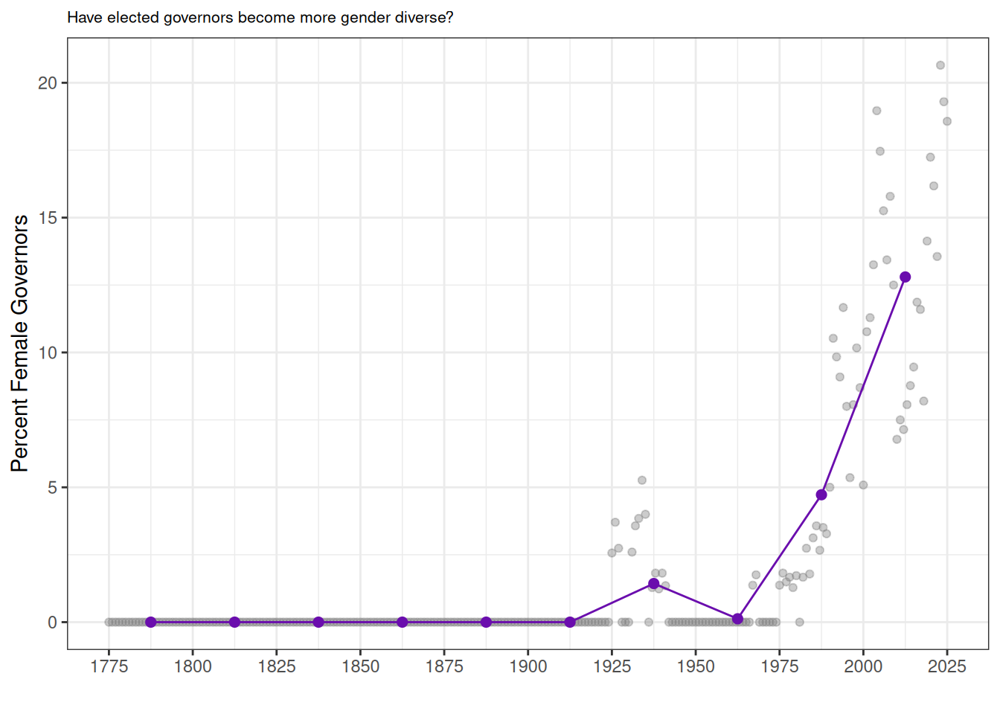
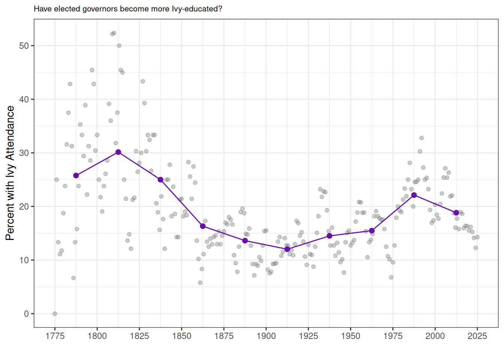

This dataset contains information on the biographical backgrounds of United States governors (of states and territories) from 1775 to the present. You can explore and download the expanded data in the “Explore the Data” tab.
Brief Survey
If you use our materials in your class or another setting, we would love to hear about it!
Dataset
{ojs} //|echo: false // Using the Post45 Data Viewer // https://observablehq.com/d/8bb63a6cde9addff import {viewof dataSummaryView, Tabulator, viewof selectedColumns, viewof dataSet, tableContainer, fetchData, generateTabulatorTableFromCSV, progress, progressbar} from "8bb63a6cde9addff"
```{ojs} //|echo: false //|output: false
// Using the Post45 Data Viewer // https://observablehq.com/d/8bb63a6cde9addff generateTabulatorTableFromCSV( “#table-container4”, “https://raw.githubusercontent.com/melaniewalsh/responsible-datasets-in-context/refs/heads/main/datasets/gubernatorial-bios/gubernatorial_bios_final.csv”, { displayedColumns: [ // Core identity & office “state_territory”, “governor”, “party”, “first_year”, “years_in_office”,
// Background & education
"school",
"college_attendance",
"ivy_attendance",
"lawyer",
"military_service",
// Birth & demographics
"birth_state_territory",
"birth_date",
"age_at_start",
"gender",
"born_in_state_territory",
"intl_born",
"intl_born_details",
// Long description
],
columnPopups: [
"U.S. state or territory governed.",
"Governor’s name.",
"Political party affiliation.",
"First year they served as governor.",
"Spans/terms served (as listed in the bio).",
"Primary college or university listed (if any).",
"Did the governor attend college? (1/0).",
"Did the governor attend an Ivy League school? (1/0).",
"Is/was the governor a lawyer? (1/0).",
"Did the governor serve in the military? (1/0).",
"Birth state or territory.",
"Birth date (YYYY-MM-DD where available).",
"Age at the start of first term.",
"Gender as recorded in the dataset.",
"Whether born in the state/territory they govern (1/0).",
"Whether born outside the U.S. (1/0).",
"Details about international birthplace if applicable.",
],
// columnWidths: {
// governor: "220px",
// party: "140px",
// years_in_office: "220px",
// school: "220px",
// bio_text: "40%"
// },
// Treat these as numeric so you get proper sort/filter ranges
numericColumns: ["first_year", "age_at_start"],
// Good facets for filtering
categoryColumns: [
"state_territory",
"party",
"school",
"birth_state_territory",
"gender",
// binary flags as categories for easy faceting
"college_attendance",
"ivy_attendance",
"lawyer",
"military_service",
"born_in_state_territory",
"intl_born"
],
// Default sort: by state, then governor
sortColumns: ["state_territory", "governor"],
sortOrders: ["asc", "asc"],
// Buttons (kept the same IDs you used)
buttonContainerId: "#button-container1",
rawButtonId: "#download-raw1",
urlCopyButtonId: "#copy-url1",
// Optional: if your helper supports label maps for 1/0 columns, this is handy.
// booleanLabelColumns: {
// college_attendance: { "1": "Yes", "0": "No" },
// ivy_attendance: { "1": "Yes", "0": "No" },
// lawyer: { "1": "Yes", "0": "No" },
// military_service: { "1": "Yes", "0": "No" },
// born_in_state_territory: { "1": "Yes", "0": "No" },
// intl_born: { "1": "Yes", "0": "No" }
// }
Alongside the names and states of each governor, the dataset includes information on gender, educational background, as well as other characteristics. The dataset is based on the publicly-available biographies of governors from the National Governors Association (NGA). We capture the following variables from the website:
state_territory: U.S. state or territory where the governor served.
governor: Full name of the governor, as listed on the website. The listed name is not always the legal name of the person, e.g John Ellis Bush Jr is listed as Jeb Bush.
party: Political party affiliation under which the governor served.
years_in_office: Concatenated string denoting term(s) in office (e.g., “1985–1991; 1995–1999”). Parsed from web biographies. - school: Educational institution(s) attended by the governor as listed on the official profile. If multiple schools are listed, usually separated by semicolons (e.g., “Brigham Young University; Harvard University”). If NA, either no school is listed or the governor did not attend college.
birth_state_territory: Parsed location (state) of birth based on text extraction.
spouse: Name of spouse, if available. If NA, the governor is either not married or spousal information is unknown.
birth_date: Date of birth, as listed on website.
bio_text: Raw string of the biographical background of the governor. In 14 cases (less than 1 percent of cases), this biographical text is missing.
Using the above information extracted from the NGA, we construct the following columns:
college attendance: Equals 1 if the governor attended any college or university; 0 otherwise.
ivy attendance: Equals 1 if the governor attended an Ivy League institution; 0 otherwise. (Note that this technically applies for EITHER graduate or undergraduate).
lawyer: Equals 1 if the biography indicates legal education or professional law practice; 0 otherwise.
military_service: Equals 1 if the biography mentions military service (e.g., Army, Navy, National Guard, etc.); 0 otherwise.
age_at_start: Age of the governor at the beginning of their first term, calculated from the reported date of birth and the start date of their first gubernatorial term.
gender: Predicted gender label male or female based on first name and time period using the gender R package. In 9 cases, this algorithm failed to predict a gender, most frequently in cases of Indigenous or Latino governors: Togiola T. A. Tulafono (American Samoa), Benígno Fitial (Northern Mariana Islands), etc. In these cases, we manually extract the gender of the governor based on pronouns in their biography.
born_in_state_territory: 1 if the governor was born in the same U.S. state/territory they governed; 0 if born elsewhere (including outside the U.S.).
intl_born: Equals 1 if the governor was born outside of the United States (as defined by the contemporary definition of the 50 states and territories); 0 otherwise. To signify internationally-born, if birth_state was labeled as “Other”, we recognize these governors as international.
intl_born_details: To get more information on governors born outside the US, we search the bio text of governors with birth_state equivalent to “Other.” We extract their likely birthplace as a string.
The data reveal notable shifts in the backgrounds of U.S. governors over the past 250 years. In the late 18th century, governors were disproportionately elite, with slightly under half having attended college. For reference, by 1870 only one percent of the US population attended college, so 50 percent is exceptionally high almost a century earlier. During the Progressive Era in the early 20th century, reformers emphasized education and professionalization in public life (including in city and local government and the federal government). This is reflected in a sharp increase in college attendance among governors between 1875-1900 and 1900-1925. Note: All line plots in this essay use grey dots to represent yearly average and purple dots to represent 25 year binned averages.
Code
# Note on installation: https://statsandr.com/blog/an-efficient-way-to-install-and-load-r-packages/# install.packages("rmarkdown")# too big# library(tidyverse)library(dplyr)library(tidyr)library(stringr)library(forcats)library(ggplot2)library(purrr)# Load National Park Visitation datagov_dataset <-read.csv("https://raw.githubusercontent.com/melaniewalsh/responsible-datasets-in-context/refs/heads/main/datasets/gubernatorial-bios/gubernatorial_bios_final.csv", stringsAsFactors =FALSE)## Create long form version of the data where each year has the set of governors who governed in that year. We will use this transformed data for a lot of our visualizationsgov_long <- gov_dataset %>%# Split multiple ranges into separate rowsseparate_rows(years_in_office, sep ="\\s(?=\\d{4}\\s-\\s\\d{4}|\\d{4}\\s-)") %>%# Extract start and end yearsmutate(start =as.numeric(str_extract(years_in_office, "^\\d{4}")),end =as.numeric(str_extract(years_in_office, "\\d{4}$")) ) %>%# Expand each range into all years servedrowwise() %>%mutate(year =list(seq(start, end))) %>%unnest(year) %>%ungroup() %>%filter(year >=1775, year <=2025) %>%distinct()## Let's get average college attendance rate by elected governors for each yearyearly_college <- gov_long %>%group_by(year) %>%summarise(total =n(),college =sum(college_attendance ==1, na.rm =TRUE),pct_college =100* college / total,.groups ="drop" )# 2. Bin years into 25-year chunksbinned_college <- yearly_college %>%mutate(bin =cut(year, breaks =seq(1775, 2025, by =25), include.lowest =TRUE, right =FALSE)) %>%group_by(bin) %>%summarise(first_year =min(year), # midpoint anchorpct_college =mean(pct_college, na.rm =TRUE),.groups ="drop" )# 3. Plotggplot() +geom_point(data = yearly_college,aes(x = year, y = pct_college),color ="gray50", alpha =0.4 ) +geom_point(data = binned_college,aes(x = first_year +12.5, y = pct_college), # put point in middle of 25-year bincolor ="#6A0DAD", size =2 ) +geom_line(data = binned_college,aes(x = first_year +12.5, y = pct_college),color ="#6A0DAD" ) +theme_bw() +xlab("") +ggtitle("Have elected governors become more college educated?") +ylab("Percent College") +theme(plot.title =element_text(size =8)) +scale_x_continuous(breaks =seq(1775, 2025, by =25)) # Add x-axis ticks every 25 years
The data were collected to systematically document the biographical backgrounds of U.S. governors over time. This project builds on a growing literature in political science that treats the personal characteristics of politicians— such as elite education, professional background, or family ties to politics—as potentially consequential for how they govern. (Dal Bó, Dal Bó, and Snyder 2009) examine political dynasties in the U.S. Congress, using biographical records to identify kinship ties and measure their persistence. In the U.K., (Fresh 2024) constructs a new dataset on Members of Parliament and applies natural language processing to biographical texts to code members’ business backgrounds, distinguishing established economic elites from emerging commercial elites in early modern Britain.
Compared to US Congress and the UK Parliament, U.S. governors remain relatively under-studied. Yet governors have long played pivotal roles in American politics, from championing progressive reforms in the early 20th century (Berman 2019), to managing managing public health and disaster responses (see literature (Baccini and Brodeur 2021) related to COVID-19), to shaping national outcomes through gerrymandering as recently as August 2025. Existing research on gubernatorial behavior, particularly during the pandemic, tends to focus narrowly on party affiliation and lacks both biographical depth and historical perspective. (Sobel and Raimo 1978) is an exception and a major work on gubernatorial biographies but has not been extended to our knowledge or turned into tabular data. This dataset helps fill that gap by systematically documenting governors’ backgrounds. This will enable new analyses of who governs the states, how elite their backgrounds are, and how such backgrounds have evolved over time.
For example, the next figure shows the share of governors with military service. As expected, service rates were higher during major conflicts such as the Civil War, World Wars I and II, Korea, and Vietnam. In contrast, service during the Iraq and Afghanistan wars appears comparable to peacetime levels.
Code
## Let's get average military rate by elected governors for each yearyearly_military <- gov_long %>%group_by(year) %>%summarise(total =n(),military =sum(military_service ==1, na.rm =TRUE),pct_military =100* military / total,.groups ="drop" )# 2. Bin years into 25-year chunksbinned_military <- yearly_military %>%mutate(bin =cut(year, breaks =seq(1775, 2025, by =25), include.lowest =TRUE, right =FALSE)) %>%group_by(bin) %>%summarise(first_year =min(year),pct_military =mean(pct_military, na.rm =TRUE),.groups ="drop" )# 3. Plotggplot() +geom_point(data = yearly_military,aes(x = year, y = pct_military),color ="gray50", alpha =0.4 ) +geom_point(data = binned_military,aes(x = first_year +12.5, y = pct_military), # center in bincolor ="#6A0DAD", size =2 ) +geom_line(data = binned_military,aes(x = first_year +12.5, y = pct_military),color ="#6A0DAD" ) +theme_bw() +xlab("") +ggtitle("Have elected governors served in the military more or less?") +ylab("Percent Military Service") +theme(plot.title =element_text(size =8)) +scale_x_continuous(breaks =seq(1775, 2025, by =25))
How Was The Data Collected?
To build a new individual-level data set, we web-scrape all former United States governors from the NGA. The function reads in a web-page for a given state and returns the basic information that NGA has for that state, e.g., California. The function then searches into each governor’s subpage. Here, the NGA has a biographical background paragraph on each governor, e.g., Arnold Schwarnegger. We repeat for the current set of governors, found here.
We also scrape terms from the top of their page. For example, consider the background of Arnold Schwarzenegger. This allows us to ascertain his political party, his terms in office, birthdate (and therefore age when entering office), his university, and that his birthplace is outside the US.
Arnold Schwarzenegger’s NGA page
We use basic text extraction techniques to identify certain key biographical attributes. With Arnold Schwarnegger, we extract his birth country from his text bio.
“Arnold Schwarzenegger came to the governorship of California following a distinguished career in body building, business, and entertainment. Schwarzenegger was born in Austria and at 20 became the youngest person to win the Mr. Universe title. He won an unprecedented 12 more world bodybuilding titles. Schwarzenegger earned a college degree from the University of Wisconsin and became a U.S. citizen in 1983. Former President George H.W. Bush appointed him Chair of the President’s Council on Physical Fitness and Sports in 1990. He also served as Chair of the California Governor’s Council on Physical Fitness and Sports under California Governor Pete Wilson. He married Maria Shriver in 1986 and has remained closely involved in Special Olympics, an organization founded by her late mother, Eunice Kennedy Shriver.
Schwarzenegger became the 38th Governor of California pursuant to a recall election to replace Governor Gray Davis. Schwarzenegger’s accomplishments as governor include a bipartisan agreement to reduce California’s greenhouse gas emissions by signing landmark legislation in 2006, increasing the minimum wage while lowering the state’s unemployment rate, and overhauling the workers’ compensation system—cutting costs by more than 35 percent. Schwarzenegger made major investments in improving California’s aging infrastructure through his Strategic Growth Plan, helping to reduce congestion and clean the air.”
In total, the full sample is of 2,486 individuals from 55 states and territories, including governors from Puerto Rico (1949-present), American Samoa, Guam, the Northern Mariana Islands, and the US Virgin Islands. The latter territories do not have full federal representation or rights.
The following table shows a sample portion of the data frame:
Misericordia University; University of Alaska Fairbanks
Pennsylvania
American Samoa
Pula’ali’i Nikolao Pula
Republican
2025
Menlo College; Brigham Young University; George Mason University
American Samoa
Arizona
Katie Hobbs
Democratic
2023
Northern Arizona University, Arizona State University
Arizona
Arkansas
Sarah Huckabee Sanders
Republican
2023
Ouachita Baptist University
Arkansas
California
Gavin Newsom
Democratic
2019
Santa Clara University
California
Uncertainty in the Data
The lawyer indicator indicator is likely among the more error-prone variables in the dataset. It is constructed first by considering whether the governor listed his/her law school in the ``school” listing, as was occasionally done. Then, it uses regular expression matching to identify whether a governor’s biography contains terms such as lawyer, law degree, studied law, legal practice, or school of law. This approach may miss individuals who practiced law but whose biographies do not contain these specific phrases, particularly in earlier periods.
Another interesting inconsistency in the data is the birth_date column. For example, let’s take a look at Gov. Sam Houston Jones of Louisiana.
Sam Houston Jones’ NGA page where his birth year is after his term start
Despite his governorship beginning in 1940, the NGA site lists Jones’ birth date in 1987. Unless Jones was a time traveler, this doesn’t pass a basic sanity check. Obviously, the NGA made a mistake, Jones was born in 1897, but Jones is not the only one. We found 17 governors in the dataset whose birth date was after their term start. We manually corrected the subset whose birth date was after or too close to their term start in the dataset, but those are unlikely to be all the errors.
We extract the school column based on a similar method, of identifying the school tag on the NGA site. However, some governors like Kenneth Hood Mackay attended college but don’t have an NGA tag for it. We did not attempt to locate the set of governors who attended college but didn’t have a dedicated school tag on their NGA site, so we are likely underestimating the number of governors who attended college.
Kenneth Hood Mackay’s NGA page where he has no school listed in the table.
The birth_date and school columns are instructive examples of how even reliable websites backed with institutional authority can make mistakes with data entry. Those data entry mistakes can propagate into resources like this, whose quality is only ever as good as the underlying source.
Data Visualization
Here, we show some descriptive statistics. We plot the underlying yearly data, along with binned averages from each 25-year period, plotted in purple.
Due to these data, we can now visualize the rise in female governors in the last half-century. Historically, women have rarely been represented in the executive branch of government. The first female governor, Nellie Taylor Ross, was elected to office in Wyoming in 1925. To date, approximately 50 female governors have held office.
Nellie Taylor Ross was the first female US governor.
Code
## Let's get average % female governors every yearyearly_female <- gov_long %>%group_by(year) %>%summarise(total =n(),female =sum(gender =="female", na.rm =TRUE),pct_female =100* female / total,.groups ="drop" )# 2. Bin years into 25-year chunksbinned_female <- yearly_female %>%mutate(bin =cut(year, breaks =seq(1775, 2025, by =25), include.lowest =TRUE, right =FALSE)) %>%group_by(bin) %>%summarise(first_year =min(year),pct_female =mean(pct_female, na.rm =TRUE),.groups ="drop" )# 3. Plotggplot() +geom_point(data = yearly_female,aes(x = year, y = pct_female),color ="gray50", alpha =0.4 ) +geom_point(data = binned_female,aes(x = first_year +12.5, y = pct_female), # center in bincolor ="#6A0DAD", size =2 ) +geom_line(data = binned_female,aes(x = first_year +12.5, y = pct_female),color ="#6A0DAD" ) +theme_bw() +xlab("") +ggtitle("Have elected governors become more gender diverse?") +ylab("Percent Female Governors") +theme(plot.title =element_text(size =8)) +scale_x_continuous(breaks =seq(1775, 2025, by =25))

The percentage of Ivy League-educated governors has slightly decreased over time, with approximately 25 percent of governors in each period being educated at an Ivy League institution. In previous work on political backgrounds, such as (Dal Bó, Dal Bó, and Snyder 2009) an Ivy League education is commonly used as a marker of elite status. This definition omits other highly selective institutions—such as Stanford, the University of Chicago, or Georgetown—which also serve as pipelines to elite political careers.
Code
## Let's look at Ivy League rateyearly_ivy <- gov_long %>%group_by(year) %>%summarise(total =n(),ivy =sum(ivy_attendance ==1, na.rm =TRUE),pct_ivy =100* ivy / total,.groups ="drop" )# 2. Bin years into 25-year chunksbinned_ivy <- yearly_ivy %>%mutate(bin =cut(year, breaks =seq(1775, 2025, by =25), include.lowest =TRUE, right =FALSE)) %>%group_by(bin) %>%summarise(first_year =min(year),pct_ivy =mean(pct_ivy, na.rm =TRUE),.groups ="drop" )# 3. Plotggplot() +geom_point(data = yearly_ivy,aes(x = year, y = pct_ivy),color ="gray50", alpha =0.4 ) +geom_point(data = binned_ivy,aes(x = first_year +12.5, y = pct_ivy), # center in bincolor ="#6A0DAD", size =2 ) +geom_line(data = binned_ivy,aes(x = first_year +12.5, y = pct_ivy),color ="#6A0DAD" ) +theme_bw() +xlab("") +ggtitle("Have elected governors become more Ivy-educated?") +ylab("Percent with Ivy Attendance") +theme(plot.title =element_text(size =8)) +scale_x_continuous(breaks =seq(1775, 2025, by =25))

Have gubernatorial offices become more professionalized over the course of American history? We track the share of governors with law degrees as a simple proxy for how “professionalized” the office is. Law has long been a standard path into politics–lawyers gain legal expertise and entry into elite social networks. The share rises through the mid-19th century and then plateaus. Since roughly 2000, it declines modestly, consistent with more governors coming from business and other non-law fields.
Code
## Let's look at rate of governors with law degreesyearly_lawyer <- gov_long %>%group_by(year) %>%summarise(total =n(),lawyer =sum(lawyer ==1, na.rm =TRUE),pct_lawyer =100* lawyer / total,.groups ="drop" )# 2. Bin years into 25-year chunksbinned_lawyer <- yearly_lawyer %>%mutate(bin =cut(year, breaks =seq(1775, 2025, by =25), include.lowest =TRUE, right =FALSE)) %>%group_by(bin) %>%summarise(first_year =min(year),pct_lawyer =mean(pct_lawyer, na.rm =TRUE),.groups ="drop" )# 3. Plotggplot() +geom_point(data = yearly_lawyer,aes(x = year, y = pct_lawyer),color ="gray50", alpha =0.4 ) +geom_point(data = binned_lawyer,aes(x = first_year +12.5, y = pct_lawyer), # center in bincolor ="#6A0DAD", size =2 ) +geom_line(data = binned_lawyer,aes(x = first_year +12.5, y = pct_lawyer),color ="#6A0DAD" ) +theme_bw() +xlab("") +ggtitle("Have elected governors become more likely to be lawyers?") +ylab("Percent Lawyers") +theme(plot.title =element_text(size =8)) +scale_x_continuous(breaks =seq(1775, 2025, by =25))
Which parties have produced the largest number of distinct governors? We count each person once (regardless of how many terms served), tallying their listed party affiliation. On this measure, Democrats make up the largest share, followed by Republicans, with historical parties (Whig, Democratic-Republican, Federalist, etc.) comprising smaller slices.
We also want to know if governors were born in the same state that they eventually governed. We plot the share of governors who were born in their state. Surprisingly, this proportion has actually increased over time.
Code
## Let's look at rate of governors with law degreesyearly_born_in_state <- gov_long %>%group_by(year) %>%summarise(total =n(),in_state =sum(born_in_state_territory ==1, na.rm =TRUE),pct_in_state =100* in_state / total,.groups ="drop" )# 2. Bin years into 25-year chunksbinned_born_in_state <- yearly_born_in_state %>%mutate(bin =cut(year, breaks =seq(1775, 2025, by =25), include.lowest =TRUE, right =FALSE)) %>%group_by(bin) %>%summarise(first_year =min(year),pct_in_state =mean(pct_in_state, na.rm =TRUE),.groups ="drop" )# 3. Plotggplot() +geom_point(data = yearly_born_in_state,aes(x = year, y = pct_in_state),color ="gray50", alpha =0.4 ) +geom_point(data = binned_born_in_state,aes(x = first_year +12.5, y = pct_in_state), # center in bincolor ="#6A0DAD", size =2 ) +geom_line(data = binned_born_in_state,aes(x = first_year +12.5, y = pct_in_state),color ="#6A0DAD" ) +theme_bw() +xlab("") +ggtitle("Percent of Governors Born in the State/Territory They Governed") +ylab("Percent Born In-State") +theme(plot.title =element_text(size =8)) +scale_x_continuous(breaks =seq(1775, 2025, by =25))
Governors, like many politicians, have been getting older over time. In the past 25 years, the average age at entry has been about 55. This pattern likely reflects not only changes in the typical political career but also broader increases in life expectancy.
Code
yearly_age <- gov_long %>%group_by(year) %>%summarise(avg_age =mean(age_at_start, na.rm =TRUE),.groups ="drop" )# 2. Bin years into 25-year chunks and compute mean within each binbinned_age <- yearly_age %>%mutate(bin =cut(year, breaks =seq(1775, 2025, by =25), include.lowest =TRUE, right =FALSE)) %>%group_by(bin) %>%summarise(first_year =min(year),avg_age =mean(avg_age, na.rm =TRUE),.groups ="drop" )# 3. Plotggplot() +geom_point(data = yearly_age,aes(x = year, y = avg_age),color ="gray50", alpha =0.4 ) +geom_point(data = binned_age,aes(x = first_year +12.5, y = avg_age), # center in bincolor ="#6A0DAD", size =2 ) +geom_line(data = binned_age,aes(x = first_year +12.5, y = avg_age),color ="#6A0DAD" ) +theme_bw() +xlab("") +ggtitle("Average Age of Governors at Start of Office") +ylab("Average Age") +theme(plot.title =element_text(size =8)) +scale_x_continuous(breaks =seq(1775, 2025, by =25))
Conclusion
The gubernatorial biography dataset gives us perspective on the range of backgrounds for important politicians in American history. Generating features for tabular data out of web-scraped text is challenging and imperfect. But, efforts like this help us notice demographic trends among US governors, and we’ve pointed out a couple interesting results around gender, professionalization, and governor age. We think future work could refine our methods and extend them to other offices, to help complete a more full picture of the history of American government.
References
Baccini, Leonardo, and Abel Brodeur. 2021. “Explaining Governors’ Response to the COVID-19 Pandemic in the United States.”American Politics Research 49 (1): 48–57. https://doi.org/10.1177/1532673X20984458.
Berman, David R. 2019. Governors and the Progressive Movement. University Press Of Colorado.
Dal Bó, Ernesto, Pedro Dal Bó, and Jason Snyder. 2009. “Political Dynasties.”The Review of Economic Studies 76 (1): 115–42.
Fresh, Adriane. 2024. “Elite Persistence in the Era of England’s Expanding Overseas Trade.”SSRN Electronic Journal. https://doi.org/10.2139/ssrn.4721401.
Sobel, Robert, and John Raimo. 1978. Biographical Directory of the Governors of the United States, 1789-1978. Vol. 2. Meckler Books Westport, CT.
Explore the Data
Explore the Data
```{ojs} //|echo: false //|output: false
// Using the Post45 Data Viewer // https://observablehq.com/d/8bb63a6cde9addff generateTabulatorTableFromCSV( “#table-container1”, “https://raw.githubusercontent.com/melaniewalsh/responsible-datasets-in-context/refs/heads/main/datasets/gubernatorial-bios/gubernatorial_bios_final.csv”, { displayedColumns: [ // Core identity & office “state_territory”, “governor”, “party”, “first_year”, “years_in_office”,
// Background & education
"school",
"college_attendance",
"ivy_attendance",
"lawyer",
"military_service",
// Birth & demographics
"birth_state_territory",
"birth_date",
"age_at_start",
"gender",
"born_in_state_territory",
"intl_born",
"intl_born_details",
// Long description
"bio_text"
],
columnPopups: [
"U.S. state or territory governed.",
"Governor’s name.",
"Political party affiliation.",
"First year they served as governor.",
"Spans/terms served (as listed in the bio).",
"Primary college or university listed (if any).",
"Did the governor attend college? (1/0).",
"Did the governor attend an Ivy League school? (1/0).",
"Is/was the governor a lawyer? (1/0).",
"Did the governor serve in the military? (1/0).",
"Birth state or territory.",
"Birth date (YYYY-MM-DD where available).",
"Age at the start of first term.",
"Gender as recorded in the dataset.",
"Whether born in the state/territory they govern (1/0).",
"Whether born outside the U.S. (1/0).",
"Details about international birthplace if applicable.",
"Short biography text."
],
// columnWidths: {
// governor: "220px",
// party: "140px",
// years_in_office: "220px",
// school: "220px",
// bio_text: "40%"
// },
// Treat these as numeric so you get proper sort/filter ranges
numericColumns: ["first_year", "age_at_start"],
// Good facets for filtering
categoryColumns: [
"state_territory",
"party",
"school",
"birth_state_territory",
"gender",
// binary flags as categories for easy faceting
"college_attendance",
"ivy_attendance",
"lawyer",
"military_service",
"born_in_state_territory",
"intl_born"
],
// Default sort: by state, then governor
sortColumns: ["state_territory", "governor"],
sortOrders: ["asc", "asc"],
// Buttons (kept the same IDs you used)
buttonContainerId: "#button-container2",
rawButtonId: "#download-raw2",
urlCopyButtonId: "#copy-url2",
// Optional: if your helper supports label maps for 1/0 columns, this is handy.
// booleanLabelColumns: {
// college_attendance: { "1": "Yes", "0": "No" },
// ivy_attendance: { "1": "Yes", "0": "No" },
// lawyer: { "1": "Yes", "0": "No" },
// military_service: { "1": "Yes", "0": "No" },
// born_in_state_territory: { "1": "Yes", "0": "No" },
// intl_born: { "1": "Yes", "0": "No" }
// }
The Historical Gubernatorial Dataset is useful as a dataset for presenting interesting examples and prompting future independent exploration. Information about the governors in the dataset is well-available online, and finding historical outliers can be a fun way to engage with the history of the American Government. The exercise we present here introduces basic data exploration skills to look at common instances in a dataframe column, and then prompts the student to explore further on their own.
---title: "A Historical Dataset on Governors of the United States and Its Territories"author: Sydney White, Kenneth Scheve, Theo Serlin, and Neel Guptadate: "2025-09"categories: [government, biographies, history, politics, governors, draft]image: "https://upload.wikimedia.org/wikipedia/commons/a/af/National_Governors_Association_logo.svg"format-links: [ipynb, pdf, docx]# toc: true# toc-depth: 3# toc-title: "On this page"# toc-location: leftformat: html: css: ../../styles.cssdf-print: kablecode-fold: truecode-tools: trueeditor: visualR.options: warn: false knitr.graphics.auto_pdf: true# (rest of your listing blocks unchanged)listing:# add back if there are R exercises # - id: exercise-posts-r # contents: exercises-r # exclude: # categories: "dataset, draft" # sort: "date desc" # type: table # fields: [date, title, categories] # categories: false # sort-ui: false # filter-ui: true # image-height: 200px - id: exercise-posts-python contents: exercises-python exclude: categories: "dataset, draft" sort: "date desc" type: table fields: [date, title, categories] categories: false sort-ui: false filter-ui: truebibliography: ../../references/references.bib---> ::::::::::::::::::: {.panel-tabset .nav-pills}> # Data Essay {#data-essay .tab-pane}>> ## Introduction>> This dataset contains information on the biographical backgrounds of United States governors (of states and territories) from 1775 to the present. You can explore and download the expanded data in the "Explore the Data" tab.>> ::: {.callout-tip icon="false"}> ## Brief Survey>> If you use our materials in your class or another setting, we would love to [hear about it](https://forms.gle/yJpQscUH9k9Rn4Qy9)!> :::>> ## Dataset>> ```{ojs}> //|echo: false> // Using the Post45 Data Viewer> // https://observablehq.com/d/8bb63a6cde9addff> import {viewof dataSummaryView, Tabulator, viewof selectedColumns, viewof dataSet, tableContainer, fetchData, generateTabulatorTableFromCSV, progress, progressbar} from "8bb63a6cde9addff"> ```>> ```{ojs}> //|echo: false> //|output: false> > // Using the Post45 Data Viewer> // https://observablehq.com/d/8bb63a6cde9addff> generateTabulatorTableFromCSV(> "#table-container4",> "https://raw.githubusercontent.com/melaniewalsh/responsible-datasets-in-context/refs/heads/main/datasets/gubernatorial-bios/gubernatorial_bios_final.csv",> {> displayedColumns: [> // Core identity & office> "state_territory",> "governor",> "party",> "first_year",> "years_in_office",> > // Background & education> "school",> "college_attendance",> "ivy_attendance",> "lawyer",> "military_service",> > // Birth & demographics> "birth_state_territory",> "birth_date",> "age_at_start",> "gender",> "born_in_state_territory",> "intl_born",> "intl_born_details",> > // Long description> ],> > columnPopups: [> "U.S. state or territory governed.",> "Governor’s name.",> "Political party affiliation.",> "First year they served as governor.",> "Spans/terms served (as listed in the bio).",> > "Primary college or university listed (if any).",> "Did the governor attend college? (1/0).",> "Did the governor attend an Ivy League school? (1/0).",> "Is/was the governor a lawyer? (1/0).",> "Did the governor serve in the military? (1/0).",> > "Birth state or territory.",> "Birth date (YYYY-MM-DD where available).",> "Age at the start of first term.",> "Gender as recorded in the dataset.",> "Whether born in the state/territory they govern (1/0).",> "Whether born outside the U.S. (1/0).",> "Details about international birthplace if applicable.",> > ],> > // columnWidths: {> // governor: "220px",> // party: "140px",> // years_in_office: "220px",> // school: "220px",> // bio_text: "40%"> // },> > // Treat these as numeric so you get proper sort/filter ranges> numericColumns: ["first_year", "age_at_start"],> > // Good facets for filtering> categoryColumns: [> "state_territory",> "party",> "school",> "birth_state_territory",> "gender",> > // binary flags as categories for easy faceting> "college_attendance",> "ivy_attendance",> "lawyer",> "military_service",> "born_in_state_territory",> "intl_born"> ],> > // Default sort: by state, then governor> sortColumns: ["state_territory", "governor"],> sortOrders: ["asc", "asc"],> > // Buttons (kept the same IDs you used)> buttonContainerId: "#button-container1",> rawButtonId: "#download-raw1",> urlCopyButtonId: "#copy-url1",> > // Optional: if your helper supports label maps for 1/0 columns, this is handy.> // booleanLabelColumns: {> // college_attendance: { "1": "Yes", "0": "No" },> // ivy_attendance: { "1": "Yes", "0": "No" },> // lawyer: { "1": "Yes", "0": "No" },> // military_service: { "1": "Yes", "0": "No" },> // born_in_state_territory: { "1": "Yes", "0": "No" },> // intl_born: { "1": "Yes", "0": "No" }> // }> }> );> > > ```>> ::: {#table-container4 style="height: 500px"}> :::>> Download Full Data>> ::: {#button-container}> <button id="download-raw1">>> <i class="fas fa-download"></i></i> Download Full Data>> </button>>> <button id="copy-url1">>> <i class="fas fa-copy"></i> Copy Full Data URL>> </button>> :::>> Download Table Data (including filtered options)>> ::: {#button-container1}> <button id="download-csv">>> <i class="fas fa-download"></i></i> Download CSV>> </button>>> <button id="download-json">>> <i class="fas fa-download"></i></i> Download JSON>> </button>>> <button id="download-xlsx"><i class="fas fa-download"></i></i> Download Excel</button>> :::>> :::: {#progress-container style="width: 100%; display: block;"}> <progress id="progress-bar" style="width: 100%;" max="100" value="0">>> </progress>>> ::: {#progress-text style="text-align: center; margin-top: 5px;"}> :::> ::::>> <link href="https://unpkg.com/tabulator-tables@6.3.0/dist/css/tabulator.min.css" rel="stylesheet">>> ```{=html}> <script src="https://unpkg.com/tabulator-tables@6.3.0/dist/js/tabulator.min.js"></script>> ```>> <!-- Excel script -->>> ```{=html}> <script type="text/javascript" src="https://oss.sheetjs.com/sheetjs/xlsx.full.min.js"></script>> ```>> ::: {.callout-tip icon="false"}> ## Creative Commons License>> <p xmlns:cc="http://creativecommons.org/ns#">>> This work is licensed under <a href="https://creativecommons.org/licenses/by/4.0/?ref=chooser-v1" target="_blank" rel="license noopener noreferrer" style="display:inline-block;">CC BY 4.0<img src="https://mirrors.creativecommons.org/presskit/icons/cc.svg?ref=chooser-v1" style="height:22px!important;margin-left:3px;vertical-align:text-bottom;"/><img src="https://mirrors.creativecommons.org/presskit/icons/by.svg?ref=chooser-v1" style="height:22px!important;margin-left:3px;vertical-align:text-bottom;"/></a>>> </p>> :::>> ## What's in the data?>> Alongside the names and states of each governor, the dataset includes information on gender, educational background, as well as other characteristics. The dataset is based on the publicly-available biographies of governors from the [National Governors Association](https://www.nga.org/) (NGA). We capture the following variables from the website:>> - state_territory: U.S. state or territory where the governor served.>> - governor: Full name of the governor, as listed on the website. The listed name is not always the legal name of the person, e.g John Ellis Bush Jr is listed as Jeb Bush.>> - party: Political party affiliation under which the governor served.>> - years_in_office: Concatenated string denoting term(s) in office (e.g., "1985–1991; 1995–1999"). Parsed from web biographies. - school: Educational institution(s) attended by the governor as listed on the official profile. If multiple schools are listed, usually separated by semicolons (e.g., "Brigham Young University; Harvard University"). If NA, either no school is listed or the governor did not attend college.>> - birth_state_territory: Parsed location (state) of birth based on text extraction.>> - spouse: Name of spouse, if available. If NA, the governor is either not married or spousal information is unknown.>> - birth_date: Date of birth, as listed on website.>> - bio_text: Raw string of the biographical background of the governor. In 14 cases (less than 1 percent of cases), this biographical text is missing.>> Using the above information extracted from the NGA, we construct the following columns:>> - college attendance: Equals 1 if the governor attended any college or university; 0 otherwise.> - ivy attendance: Equals 1 if the governor attended an Ivy League institution; 0 otherwise. (Note that this technically applies for EITHER graduate or undergraduate).> - lawyer: Equals 1 if the biography indicates legal education or professional law practice; 0 otherwise.> - military_service: Equals 1 if the biography mentions military service (e.g., Army, Navy, National Guard, etc.); 0 otherwise.> - age_at_start: Age of the governor at the beginning of their first term, calculated from the reported date of birth and the start date of their first gubernatorial term.> - gender: Predicted gender label male or female based on first name and time period using the [gender R package](https://cran.r-project.org/web/packages/gender/index.html). In 9 cases, this algorithm failed to predict a gender, most frequently in cases of Indigenous or Latino governors: Togiola T. A. Tulafono (American Samoa), Benígno Fitial (Northern Mariana Islands), etc. In these cases, we manually extract the gender of the governor based on pronouns in their biography.> - born_in_state_territory: 1 if the governor was born in the same U.S. state/territory they governed; 0 if born elsewhere (including outside the U.S.).> - intl_born: Equals 1 if the governor was born outside of the United States (as defined by the contemporary definition of the 50 states and territories); 0 otherwise. To signify internationally-born, if birth_state was labeled as "Other", we recognize these governors as international.> - intl_born_details: To get more information on governors born outside the US, we search the bio text of governors with birth_state equivalent to "Other." We extract their likely birthplace as a string.>> The data reveal notable shifts in the backgrounds of U.S. governors over the past 250 years. In the late 18th century, governors were disproportionately elite, with slightly under half having attended college. For reference, by 1870 only [one percent of the US population attended college](https://www.gilderlehrman.org/history-resources/teacher-resources/statistics-education-america-1860-1950), so 50 percent is exceptionally high almost a century earlier. During the Progressive Era in the early 20th century, reformers emphasized education and professionalization in public life (including in city and local government and the federal government). This is reflected in a sharp increase in college attendance among governors between 1875-1900 and 1900-1925. Note: All line plots in this essay use grey dots to represent yearly average and purple dots to represent 25 year binned averages.>> ```{r}> #| warning: false> >> >> # Note on installation: https://statsandr.com/blog/an-efficient-way-to-install-and-load-r-packages/> >> # install.packages("rmarkdown")> >> # too big> # library(tidyverse)> library(dplyr)> library(tidyr)> library(stringr)> library(forcats)> library(ggplot2)> library(purrr)> >> # Load National Park Visitation data> gov_dataset <- read.csv("https://raw.githubusercontent.com/melaniewalsh/responsible-datasets-in-context/refs/heads/main/datasets/gubernatorial-bios/gubernatorial_bios_final.csv", stringsAsFactors = FALSE)> >> ## Create long form version of the data where each year has the set of governors who governed in that year. We will use this transformed data for a lot of our visualizations> gov_long <- gov_dataset %>%> # Split multiple ranges into separate rows> separate_rows(years_in_office, sep = "\\s(?=\\d{4}\\s-\\s\\d{4}|\\d{4}\\s-)") %>%> # Extract start and end years> mutate(> start = as.numeric(str_extract(years_in_office, "^\\d{4}")),> end = as.numeric(str_extract(years_in_office, "\\d{4}$"))> ) %>%> # Expand each range into all years served> rowwise() %>%> mutate(year = list(seq(start, end))) %>%> unnest(year) %>%> ungroup() %>%> filter(year >= 1775, year <= 2025) %>%> distinct()> >> ## Let's get average college attendance rate by elected governors for each year> yearly_college <- gov_long %>%> group_by(year) %>%> summarise(> total = n(),> college = sum(college_attendance == 1, na.rm = TRUE),> pct_college = 100 * college / total,> .groups = "drop"> )> >> # 2. Bin years into 25-year chunks> binned_college <- yearly_college %>%> mutate(bin = cut(year, breaks = seq(1775, 2025, by = 25), include.lowest = TRUE, right = FALSE)) %>%> group_by(bin) %>%> summarise(> first_year = min(year), # midpoint anchor> pct_college = mean(pct_college, na.rm = TRUE),> .groups = "drop"> )> >> # 3. Plot> ggplot() +> geom_point(> data = yearly_college,> aes(x = year, y = pct_college),> color = "gray50", alpha = 0.4> ) +> geom_point(> data = binned_college,> aes(x = first_year + 12.5, y = pct_college), # put point in middle of 25-year bin> color = "#6A0DAD", size = 2> ) +> geom_line(> data = binned_college,> aes(x = first_year + 12.5, y = pct_college),> color = "#6A0DAD"> ) +> theme_bw() +> xlab("") +> ggtitle("Have elected governors become more college educated?") +> ylab("Percent College") +> theme(plot.title = element_text(size = 8)) +> scale_x_continuous(breaks = seq(1775, 2025, by = 25)) # Add x-axis ticks every 25 years> >> ```>> ## Where Did The Data Come From? Who Collected It?>> The data set came from the National Governors Association and was collected by the principal investigator Kenneth Scheve (University of Notre Dame), Sydney White (Columbia University) and Theo Serlin (King's College, Longon) as part of a larger research team at Yale University. Our sponsors included the [Yale University of Department of Political Science](https://politicalscience.yale.edu/), [Center for the Study of American Politics (CSAP)](https://csap.yale.edu/) and the [Yale Jackson School of Global Affairs](https://jackson.yale.edu/%7D).>> ## Why Was The Data Collected? How Is The Data Used?>> The data were collected to systematically document the biographical backgrounds of U.S. governors over time. This project builds on a growing literature in political science that treats the personal characteristics of politicians— such as elite education, professional background, or family ties to politics—as potentially consequential for how they govern. [@dal2009political] examine political dynasties in the U.S. Congress, using biographical records to identify kinship ties and measure their persistence. In the U.K., [@Fresh_2024] constructs a new dataset on Members of Parliament and applies natural language processing to biographical texts to code members’ business backgrounds, distinguishing established economic elites from emerging commercial elites in early modern Britain.>> Compared to US Congress and the UK Parliament, U.S. governors remain relatively under-studied. Yet governors have long played pivotal roles in American politics, from championing progressive reforms in the early 20th century [@berman2019governors], to managing managing public health and disaster responses (see literature [@baccini2021explaining] related to COVID-19), to shaping national outcomes through gerrymandering as recently as [August 2025](https://apnews.com/article/us-election-2026-texas-redistricting-136cfeddc717f9fc69337bd3d39b1819). Existing research on gubernatorial behavior, particularly during the pandemic, tends to focus narrowly on party affiliation and lacks both biographical depth and historical perspective. [@sobel1978biographical] is an exception and a major work on gubernatorial biographies but has not been extended to our knowledge or turned into tabular data. This dataset helps fill that gap by systematically documenting governors’ backgrounds. This will enable new analyses of who governs the states, how elite their backgrounds are, and how such backgrounds have evolved over time.>> For example, the next figure shows the share of governors with military service. As expected, service rates were higher during major conflicts such as the Civil War, World Wars I and II, Korea, and Vietnam. In contrast, service during the Iraq and Afghanistan wars appears comparable to peacetime levels.>> ```{r}> >> >> >> ## Let's get average military rate by elected governors for each year> yearly_military <- gov_long %>%> group_by(year) %>%> summarise(> total = n(),> military = sum(military_service == 1, na.rm = TRUE),> pct_military = 100 * military / total,> .groups = "drop"> )> >> # 2. Bin years into 25-year chunks> binned_military <- yearly_military %>%> mutate(bin = cut(year, breaks = seq(1775, 2025, by = 25), include.lowest = TRUE, right = FALSE)) %>%> group_by(bin) %>%> summarise(> first_year = min(year),> pct_military = mean(pct_military, na.rm = TRUE),> .groups = "drop"> )> >> # 3. Plot> ggplot() +> geom_point(> data = yearly_military,> aes(x = year, y = pct_military),> color = "gray50", alpha = 0.4> ) +> geom_point(> data = binned_military,> aes(x = first_year + 12.5, y = pct_military), # center in bin> color = "#6A0DAD", size = 2> ) +> geom_line(> data = binned_military,> aes(x = first_year + 12.5, y = pct_military),> color = "#6A0DAD"> ) +> theme_bw() +> xlab("") +> ggtitle("Have elected governors served in the military more or less?") +> ylab("Percent Military Service") +> theme(plot.title = element_text(size = 8)) +> scale_x_continuous(breaks = seq(1775, 2025, by = 25))> >> ```>> ## How Was The Data Collected?>> To build a new individual-level data set, we web-scrape all former United States governors from the NGA. The function reads in a web-page for a given state and returns the basic information that NGA has for that state, e.g., [California](https://www.nga.org/former-governors/california/). The function then searches into each governor's subpage. Here, the NGA has a biographical background paragraph on each governor, e.g., [Arnold Schwarnegger](https://www.nga.org/governor/arnold-schwarzenegger/). We repeat for the current set of governors, found [here](https://www.nga.org/governors/).>> We also scrape terms from the top of their page. For example, consider the background of Arnold Schwarzenegger. This allows us to ascertain his political party, his terms in office, birthdate (and therefore age when entering office), his university, and that his birthplace is outside the US.>> >> We use basic text extraction techniques to identify certain key biographical attributes. With Arnold Schwarnegger, we extract his birth country from his text bio.::: {style="font-size: 75%;"}> "Arnold Schwarzenegger came to the governorship of California following a distinguished career in body building, business, and entertainment. Schwarzenegger was born in **Austria** and at 20 became the youngest person to win the Mr. Universe title. He won an unprecedented 12 more world bodybuilding titles. Schwarzenegger earned a college degree from the University of Wisconsin and became a U.S. citizen in 1983. Former President George H.W. Bush appointed him Chair of the President’s Council on Physical Fitness and Sports in 1990. He also served as Chair of the California Governor’s Council on Physical Fitness and Sports under California Governor Pete Wilson. He married Maria Shriver in 1986 and has remained closely involved in Special Olympics, an organization founded by her late mother, Eunice Kennedy Shriver.> Schwarzenegger became the 38th Governor of California pursuant to a recall election to replace Governor Gray Davis. Schwarzenegger’s accomplishments as governor include a bipartisan agreement to reduce California’s greenhouse gas emissions by signing landmark legislation in 2006, increasing the minimum wage while lowering the state’s unemployment rate, and overhauling the workers’ compensation system—cutting costs by more than 35 percent. Schwarzenegger made major investments in improving California’s aging infrastructure through his Strategic Growth Plan, helping to reduce congestion and clean the air.":::> > In total, the full sample is of 2,486 individuals from 55 states and territories, including governors from Puerto Rico (1949-present), American Samoa, Guam, the Northern Mariana Islands, and the US Virgin Islands. The latter territories do not have full federal representation or rights.>> The following table shows a sample portion of the data frame:>> ```{r}> #| warning: false> >> head(gov_dataset[c("state_territory", "governor", "party", "first_year", "school", "birth_state_territory")])> >> ```>> ## Uncertainty in the Data>> The **lawyer** indicator indicator is likely among the more error-prone variables in the dataset. It is constructed first by considering whether the governor listed his/her law school in the \`\`school" listing, as was occasionally done. Then, it uses regular expression matching to identify whether a governor's biography contains terms such as **lawyer**, **law degree**, **studied law**, **legal practice**, or **school of law**. This approach may miss individuals who practiced law but whose biographies do not contain these specific phrases, particularly in earlier periods.>> Another interesting inconsistency in the data is the **birth_date** column. For example, let's take a look at [Gov. Sam Houston Jones](https://www.nga.org/governor/sam-houston-jones/) of Louisiana.>> >> Despite his governorship beginning in 1940, the NGA site lists Jones' birth date in 1987. Unless Jones was a time traveler, this doesn't pass a basic sanity check. Obviously, the NGA made a mistake, Jones was born in 1897, but Jones is not the only one. We found 17 governors in the dataset whose birth date was **after** their term start. We manually corrected the subset whose birth date was after or too close to their term start in the dataset, but those are unlikely to be all the errors.>> We extract the **school** column based on a similar method, of identifying the **school** tag on the NGA site. However, some governors like [Kenneth Hood Mackay](https://www.nga.org/governor/kenneth-hood-mackay/) attended college but don't have an NGA tag for it. We did not attempt to locate the set of governors who attended college but didn't have a dedicated school tag on their NGA site, so we are likely underestimating the number of governors who attended college.>> >> The **birth_date** and **school** columns are instructive examples of how even reliable websites backed with institutional authority can make mistakes with data entry. Those data entry mistakes can propagate into resources like this, whose quality is only ever as good as the underlying source.>> ## Data Visualization>> Here, we show some descriptive statistics. We plot the underlying yearly data, along with binned averages from each 25-year period, plotted in purple.>> Due to these data, we can now visualize the rise in female governors in the last half-century. Historically, women have rarely been represented in the executive branch of government. The first female governor, Nellie Taylor Ross, was elected to office in Wyoming in 1925. To date, approximately 50 female governors have held office.>> >> ```{r}> >> >> >> ## Let's get average % female governors every year> yearly_female <- gov_long %>%> group_by(year) %>%> summarise(> total = n(),> female = sum(gender == "female", na.rm = TRUE),> pct_female = 100 * female / total,> .groups = "drop"> )> >> # 2. Bin years into 25-year chunks> binned_female <- yearly_female %>%> mutate(bin = cut(year, breaks = seq(1775, 2025, by = 25), include.lowest = TRUE, right = FALSE)) %>%> group_by(bin) %>%> summarise(> first_year = min(year),> pct_female = mean(pct_female, na.rm = TRUE),> .groups = "drop"> )> >> # 3. Plot> ggplot() +> geom_point(> data = yearly_female,> aes(x = year, y = pct_female),> color = "gray50", alpha = 0.4> ) +> geom_point(> data = binned_female,> aes(x = first_year + 12.5, y = pct_female), # center in bin> color = "#6A0DAD", size = 2> ) +> geom_line(> data = binned_female,> aes(x = first_year + 12.5, y = pct_female),> color = "#6A0DAD"> ) +> theme_bw() +> xlab("") +> ggtitle("Have elected governors become more gender diverse?") +> ylab("Percent Female Governors") +> theme(plot.title = element_text(size = 8)) +> scale_x_continuous(breaks = seq(1775, 2025, by = 25))> >> ```>> The percentage of Ivy League-educated governors has slightly decreased over time, with approximately 25 percent of governors in each period being educated at an Ivy League institution. In previous work on political backgrounds, such as [@dal2009political] an Ivy League education is commonly used as a marker of elite status. This definition omits other highly selective institutions—such as Stanford, the University of Chicago, or Georgetown—which also serve as pipelines to elite political careers.>> ```{r}> >> >> ## Let's look at Ivy League rate> yearly_ivy <- gov_long %>%> group_by(year) %>%> summarise(> total = n(),> ivy = sum(ivy_attendance == 1, na.rm = TRUE),> pct_ivy = 100 * ivy / total,> .groups = "drop"> )> >> # 2. Bin years into 25-year chunks> binned_ivy <- yearly_ivy %>%> mutate(bin = cut(year, breaks = seq(1775, 2025, by = 25), include.lowest = TRUE, right = FALSE)) %>%> group_by(bin) %>%> summarise(> first_year = min(year),> pct_ivy = mean(pct_ivy, na.rm = TRUE),> .groups = "drop"> )> >> # 3. Plot> ggplot() +> geom_point(> data = yearly_ivy,> aes(x = year, y = pct_ivy),> color = "gray50", alpha = 0.4> ) +> geom_point(> data = binned_ivy,> aes(x = first_year + 12.5, y = pct_ivy), # center in bin> color = "#6A0DAD", size = 2> ) +> geom_line(> data = binned_ivy,> aes(x = first_year + 12.5, y = pct_ivy),> color = "#6A0DAD"> ) +> theme_bw() +> xlab("") +> ggtitle("Have elected governors become more Ivy-educated?") +> ylab("Percent with Ivy Attendance") +> theme(plot.title = element_text(size = 8)) +> scale_x_continuous(breaks = seq(1775, 2025, by = 25))> >> ```>> Have gubernatorial offices become more professionalized over the course of American history? We track the share of governors with law degrees as a simple proxy for how "professionalized” the office is. Law has long been a standard path into politics--lawyers gain legal expertise and entry into elite social networks. The share rises through the mid-19th century and then plateaus. Since roughly 2000, it declines modestly, consistent with more governors coming from business and other non-law fields.>> ```{r}> >> >> ## Let's look at rate of governors with law degrees> yearly_lawyer <- gov_long %>%> group_by(year) %>%> summarise(> total = n(),> lawyer = sum(lawyer == 1, na.rm = TRUE),> pct_lawyer = 100 * lawyer / total,> .groups = "drop"> )> >> # 2. Bin years into 25-year chunks> binned_lawyer <- yearly_lawyer %>%> mutate(bin = cut(year, breaks = seq(1775, 2025, by = 25), include.lowest = TRUE, right = FALSE)) %>%> group_by(bin) %>%> summarise(> first_year = min(year),> pct_lawyer = mean(pct_lawyer, na.rm = TRUE),> .groups = "drop"> )> >> # 3. Plot> ggplot() +> geom_point(> data = yearly_lawyer,> aes(x = year, y = pct_lawyer),> color = "gray50", alpha = 0.4> ) +> geom_point(> data = binned_lawyer,> aes(x = first_year + 12.5, y = pct_lawyer), # center in bin> color = "#6A0DAD", size = 2> ) +> geom_line(> data = binned_lawyer,> aes(x = first_year + 12.5, y = pct_lawyer),> color = "#6A0DAD"> ) +> theme_bw() +> xlab("") +> ggtitle("Have elected governors become more likely to be lawyers?") +> ylab("Percent Lawyers") +> theme(plot.title = element_text(size = 8)) +> scale_x_continuous(breaks = seq(1775, 2025, by = 25))> >> ```>> Which parties have produced the largest number of distinct governors? We count each person once (regardless of how many terms served), tallying their listed party affiliation. On this measure, Democrats make up the largest share, followed by Republicans, with historical parties (Whig, Democratic-Republican, Federalist, etc.) comprising smaller slices.>> ```{r}> gov_dataset_deduplicated <- gov_dataset %>%> distinct(governor, .keep_all = TRUE)> >> party_counts <- gov_dataset_deduplicated %>%> transmute(party = coalesce(party, "")) %>%> mutate(> party = str_replace_all(party, "\\bRepublician\\b", "Republican"),> party = str_replace_all(party, "\\bDemocrat\\b", "Democratic"),> party = str_replace_all(party, "\\bJacksonian Democrat\\b|\\bJackson Democrat\\b", "Democratic"),> party = str_replace_all(party, "\\bAnti-Jacksonian\\b", "National Republican"),> party = str_replace_all(party, "\\bJeffersonian(-| )?Republican\\b", "Democratic-Republican"),> party = str_replace_all(party, "\\bIndependent-?Republican\\b", "Republican"),> party = str_replace_all(party, "\\s*\\(.*?\\)", ""),> party = str_replace_all(party, "\\s+", " ")> ) %>%> separate_rows(party, sep = "\\s*(;|,|/|\\band\\b|&|;)\\s*") %>%> mutate(party = str_squish(party)) %>%> filter(party != "") %>%> count(party, sort = TRUE)> >> party_counts_final <- party_counts %>%> slice_max(n, n = 10) %>%> mutate(party = fct_reorder(party, n))> ggplot(party_counts_final, aes(x = n, y = party)) +> geom_col(fill = "#6A0DAD") +> theme_bw() +> theme(plot.title = element_text(size = 8)) +> labs(> title = "Most common party affiliations among U.S. governors",> x = "Count", y = NULL> ) +> theme_minimal(base_size = 12)> ```>> We also want to know if governors were born in the same state that they eventually governed. We plot the share of governors who were born in their state. Surprisingly, this proportion has actually increased over time.>> ```{r}> >> >> ## Let's look at rate of governors with law degrees> yearly_born_in_state <- gov_long %>%> group_by(year) %>%> summarise(> total = n(),> in_state = sum(born_in_state_territory == 1, na.rm = TRUE),> pct_in_state = 100 * in_state / total,> .groups = "drop"> )> >> # 2. Bin years into 25-year chunks> binned_born_in_state <- yearly_born_in_state %>%> mutate(bin = cut(year, breaks = seq(1775, 2025, by = 25), include.lowest = TRUE, right = FALSE)) %>%> group_by(bin) %>%> summarise(> first_year = min(year),> pct_in_state = mean(pct_in_state, na.rm = TRUE),> .groups = "drop"> )> >> # 3. Plot> ggplot() +> geom_point(> data = yearly_born_in_state,> aes(x = year, y = pct_in_state),> color = "gray50", alpha = 0.4> ) +> geom_point(> data = binned_born_in_state,> aes(x = first_year + 12.5, y = pct_in_state), # center in bin> color = "#6A0DAD", size = 2> ) +> geom_line(> data = binned_born_in_state,> aes(x = first_year + 12.5, y = pct_in_state),> color = "#6A0DAD"> ) +> theme_bw() +> xlab("") +> ggtitle("Percent of Governors Born in the State/Territory They Governed") +> ylab("Percent Born In-State") +> theme(plot.title = element_text(size = 8)) +> scale_x_continuous(breaks = seq(1775, 2025, by = 25))> >> ```>> Governors, like many politicians, have been getting older over time. In the past 25 years, the average age at entry has been about 55. This pattern likely reflects not only changes in the typical political career but also broader increases in life expectancy.>> ```{r}> >> yearly_age <- gov_long %>%> group_by(year) %>%> summarise(> avg_age = mean(age_at_start, na.rm = TRUE),> .groups = "drop"> )> >> # 2. Bin years into 25-year chunks and compute mean within each bin> binned_age <- yearly_age %>%> mutate(bin = cut(year, breaks = seq(1775, 2025, by = 25), include.lowest = TRUE, right = FALSE)) %>%> group_by(bin) %>%> summarise(> first_year = min(year),> avg_age = mean(avg_age, na.rm = TRUE),> .groups = "drop"> )> >> # 3. Plot> ggplot() +> geom_point(> data = yearly_age,> aes(x = year, y = avg_age),> color = "gray50", alpha = 0.4> ) +> geom_point(> data = binned_age,> aes(x = first_year + 12.5, y = avg_age), # center in bin> color = "#6A0DAD", size = 2> ) +> geom_line(> data = binned_age,> aes(x = first_year + 12.5, y = avg_age),> color = "#6A0DAD"> ) +> theme_bw() +> xlab("") +> ggtitle("Average Age of Governors at Start of Office") +> ylab("Average Age") +> theme(plot.title = element_text(size = 8)) +> scale_x_continuous(breaks = seq(1775, 2025, by = 25))> ```>> ## Conclusion>> The gubernatorial biography dataset gives us perspective on the range of backgrounds for important politicians in American history. Generating features for tabular data out of web-scraped text is challenging and imperfect. But, efforts like this help us notice demographic trends among US governors, and we've pointed out a couple interesting results around gender, professionalization, and governor age. We think future work could refine our methods and extend them to other offices, to help complete a more full picture of the history of American government.>> ## References>> ::: {#refs}> :::>> ::: {#custom-footnotes}> :::>> # Explore the Data {#tabset-1-2}>> ## Explore the Data>> ::::::: {.content-hidden when-format="pdf"}> ```{ojs}> //|echo: false> //|output: false> >> // Using the Post45 Data Viewer> // https://observablehq.com/d/8bb63a6cde9addff> generateTabulatorTableFromCSV(> "#table-container1",> "https://raw.githubusercontent.com/melaniewalsh/responsible-datasets-in-context/refs/heads/main/datasets/gubernatorial-bios/gubernatorial_bios_final.csv",> {> displayedColumns: [> // Core identity & office> "state_territory",> "governor",> "party",> "first_year",> "years_in_office",> >> // Background & education> "school",> "college_attendance",> "ivy_attendance",> "lawyer",> "military_service",> >> // Birth & demographics> "birth_state_territory",> "birth_date",> "age_at_start",> "gender",> "born_in_state_territory",> "intl_born",> "intl_born_details",> >> // Long description> "bio_text"> ],> >> columnPopups: [> "U.S. state or territory governed.",> "Governor’s name.",> "Political party affiliation.",> "First year they served as governor.",> "Spans/terms served (as listed in the bio).",> >> "Primary college or university listed (if any).",> "Did the governor attend college? (1/0).",> "Did the governor attend an Ivy League school? (1/0).",> "Is/was the governor a lawyer? (1/0).",> "Did the governor serve in the military? (1/0).",> >> "Birth state or territory.",> "Birth date (YYYY-MM-DD where available).",> "Age at the start of first term.",> "Gender as recorded in the dataset.",> "Whether born in the state/territory they govern (1/0).",> "Whether born outside the U.S. (1/0).",> "Details about international birthplace if applicable.",> >> "Short biography text."> ],> >> // columnWidths: {> // governor: "220px",> // party: "140px",> // years_in_office: "220px",> // school: "220px",> // bio_text: "40%"> // },> >> // Treat these as numeric so you get proper sort/filter ranges> numericColumns: ["first_year", "age_at_start"],> >> // Good facets for filtering> categoryColumns: [> "state_territory",> "party",> "school",> "birth_state_territory",> "gender",> >> // binary flags as categories for easy faceting> "college_attendance",> "ivy_attendance",> "lawyer",> "military_service",> "born_in_state_territory",> "intl_born"> ],> >> // Default sort: by state, then governor> sortColumns: ["state_territory", "governor"],> sortOrders: ["asc", "asc"],> >> // Buttons (kept the same IDs you used)> buttonContainerId: "#button-container2",> rawButtonId: "#download-raw2",> urlCopyButtonId: "#copy-url2",> >> // Optional: if your helper supports label maps for 1/0 columns, this is handy.> // booleanLabelColumns: {> // college_attendance: { "1": "Yes", "0": "No" },> // ivy_attendance: { "1": "Yes", "0": "No" },> // lawyer: { "1": "Yes", "0": "No" },> // military_service: { "1": "Yes", "0": "No" },> // born_in_state_territory: { "1": "Yes", "0": "No" },> // intl_born: { "1": "Yes", "0": "No" }> // }> }> );> >> >> ```>> ::: {#table-container1 style="height: 500px"}> :::>> Download Full Data>> <div>>> <button id="download-raw2">>> <i class="fas fa-download"></i></i> Download Full Data>> </button>>> <button id="copy-url2">>> <i class="fas fa-copy"></i> Copy Full Data URL>> </button>>> </div>>> Download Table Data (including filtered options)>> ::: {#button-container2}> <button id="download-csv">>> <i class="fas fa-download"></i></i> Download CSV>> </button>>> <button id="download-json">>> <i class="fas fa-download"></i></i> Download JSON>> </button>>> <button id="download-xlsx"><i class="fas fa-download"></i></i> Download Excel</button>> :::>> <link href="https://unpkg.com/tabulator-tables@6.3.0/dist/css/tabulator.min.css" rel="stylesheet">>> ```{=html}> <script src="https://unpkg.com/tabulator-tables@6.3.0/dist/js/tabulator.min.js"></script>> ```>> <!-- Excel script -->>> ```{=html}> <script type="text/javascript" src="https://oss.sheetjs.com/sheetjs/xlsx.full.min.js"></script>> ```>> ::: {.callout-tip icon="false"}> ## Creative Commons License>> <p xmlns:cc="http://creativecommons.org/ns#">>> This work is licensed under <a href="https://creativecommons.org/licenses/by/4.0/?ref=chooser-v1" target="_blank" rel="license noopener noreferrer" style="display:inline-block;">CC BY 4.0<img src="https://mirrors.creativecommons.org/presskit/icons/cc.svg?ref=chooser-v1" style="height:22px!important;margin-left:3px;vertical-align:text-bottom;"/><img src="https://mirrors.creativecommons.org/presskit/icons/by.svg?ref=chooser-v1" style="height:22px!important;margin-left:3px;vertical-align:text-bottom;"/></a>>> </p>> :::> :::::::>> # Exercises {#exercises}>> ## Programming Exercises>> The Historical Gubernatorial Dataset is useful as a dataset for presenting interesting examples and prompting future independent exploration. Information about the governors in the dataset is well-available online, and finding historical outliers can be a fun way to engage with the history of the American Government. The exercise we present here introduces basic data exploration skills to look at common instances in a dataframe column, and then prompts the student to explore further on their own.>> :::: {.panel-tabset .nav-pills}> # Python>> ::: {#exercise-posts-python}> :::> ::::> :::::::::::::::::::